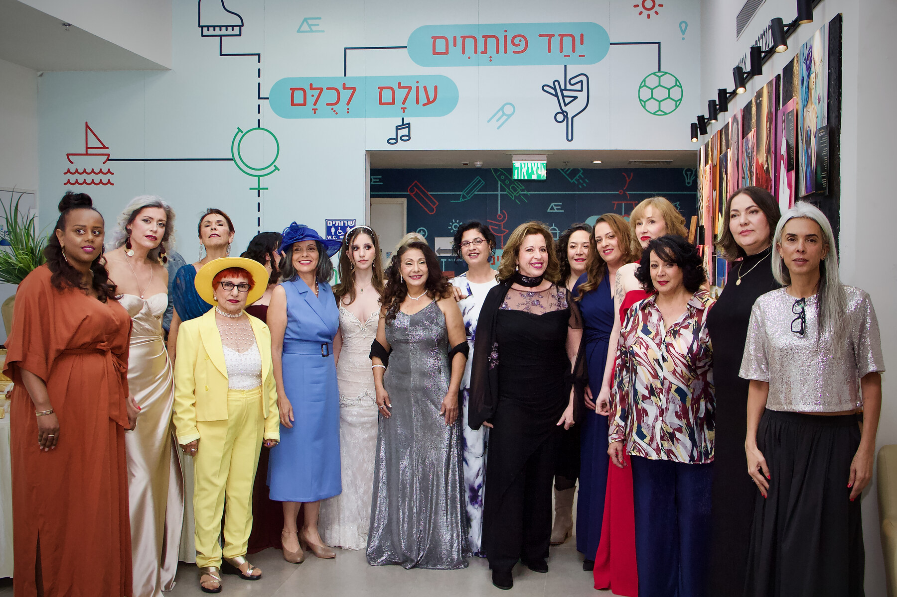
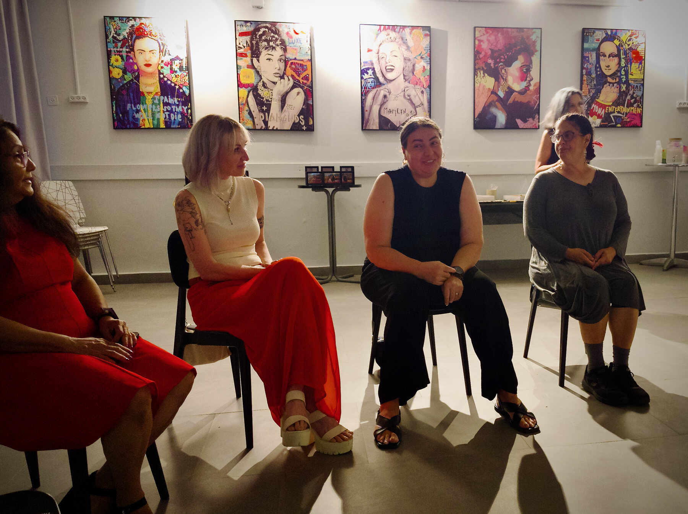
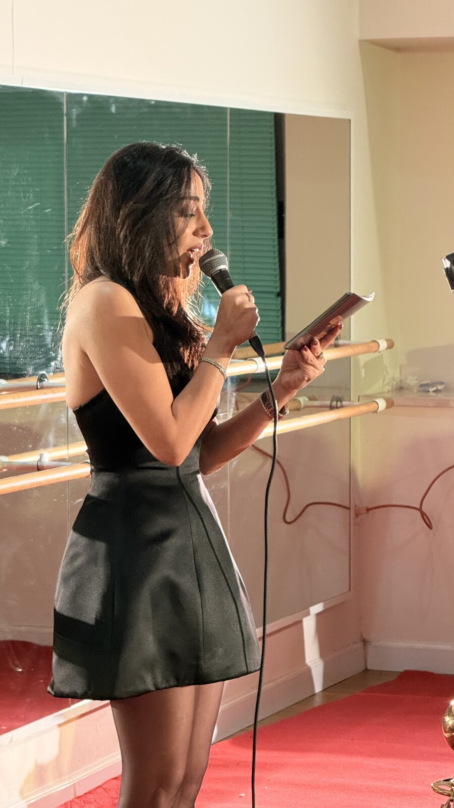

נפגשות
מכירות, משתפות ויוצרות קשרים במרחב שמאפשר לכל אחת להיות היא עצמה.

נשים. אומץ. התחלה חדשה.
מיזם של אופנה, יצירה וקהילה, שמזמין נשים המתמודדות עם אתגרים נפשיים לעלות על המסלול — ולתת מקום לעצמן.
01 / הסיפור שלנו
זו הזמנה להיראות. להיפגש. לגלות מחדש את הכוחות שבך.
נשים בגילים שונים, מ־18 ועד 80, נפגשות סביב מסלול אחד. כל אחת מביאה איתה סיפור, אישיות וחלומות — ויחד הן יוצרות מרחב של ביטוי עצמי ושייכות.
המיזם נולד מתוך הרצון לפתוח דלת לחיים חברתיים, ליצירה ולשמחה גם לצד התמודדות נפשית. התצוגה היא רגע מרגש בתוך תהליך של מפגשים, חזרות ושיחות; הזדמנות לצעוד יחד, בקצב של כל אחת.
הדרך מתחילה הרבה לפני הבמה ←
02 / הדרך לבמה
התהליך חשוב לא פחות מרגע השיא.
בכל שלב נבנים קשר, ביטחון ומקום לעצמך.

מכירות, משתפות ויוצרות קשרים במרחב שמאפשר לכל אחת להיות היא עצמה.
חזרות, שיחות ובחירת בגדים — עם ליווי, הקשבה ועידוד הדדי.
לובשות יצירות של מעצבות ומעצבים מקומיים, ופוגשות קהל שבא לראות, להתרגש ולתמוך.

האישה שמאחורי הרעיון
מתוך שנים של עבודה בתוכנית ״עמיתים״ וליווי אנשים המתמודדים עם אתגרים נפשיים, נולד אצל בתאל רעיון: ליצור במה שמאפשרת לנשים לבטא את עצמן, לפגוש קהילה ולחוות שמחה וגאווה.
הרעיון הפך למפגשים, לחזרות ולתצוגות אופנה. לצד המשתתפות, נרקם מעגל של אנשי יצירה, מעצבים ותומכים שמסייעים להביא את החזון אל הבמה.
הביוגרפיה מבוססת על תיאור המיזם ותעודכן יחד עם בתאל.
03 / רגעים שנשארים
על המסלול ובין המפגשים —
מבחר רגעים מתוך הפרויקט.
מהמפגש הראשון ועד מחיאות הכפיים
תצוגת הנפש 2026 — רגעים של יצירה, אומץ ושמחה, על במה אחת.
04 / כשהרגש פוגש צבע
לצד האופנה, המיזם נותן מקום גם לאמנות. במפגשים בהנחיית אמן, המשתתפות מוזמנות לבטא חוויות, רגשות ואתגרים באמצעות צבע וצורה.
זהו מרחב להתנסות, לשיחה ולגילוי אישי — עוד דרך לתת קול לסיפור שלהן.
עבודות המשתתפות מתוך הפרויקט. שמות היוצרות וסיפוריהן יתווספו בהמשך.05 / יחד מאפשרים לזה לקרות
הנתינה שלכם יכולה לפתוח דלת למפגש,
ליצירה ולרגע של גאווה על הבמה.
מאחורי כל תצוגה עומדים זמן, ליווי, בגדים, מקום ואנשים שאכפת להם. תמיכה במיזם מסייעת ליצור את התנאים שבהם נשים יכולות להיפגש, להתנסות ולהרגיש חלק.
בגרסת ההדגמה אין אפשרות לתשלום או לשליחת פרטים.
תודה למי שמאפשרים את הדרך
כאן נכיר את הארגונים, המעצבים והאנשים שתומכים במיזם.